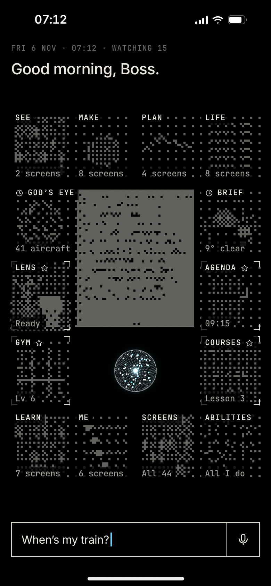
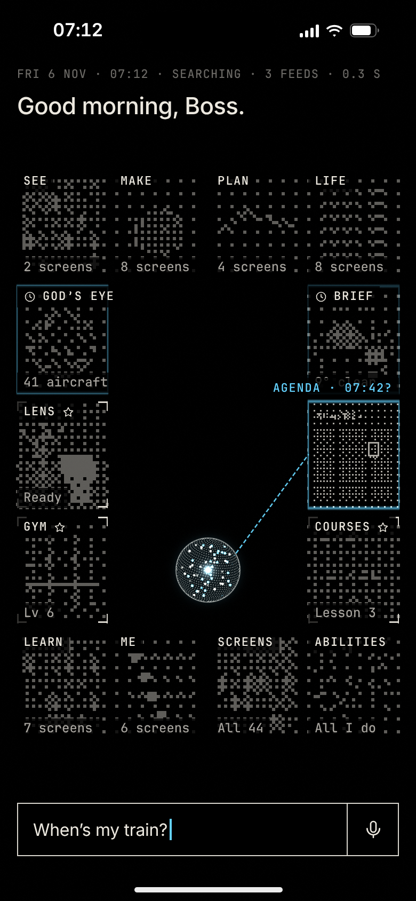
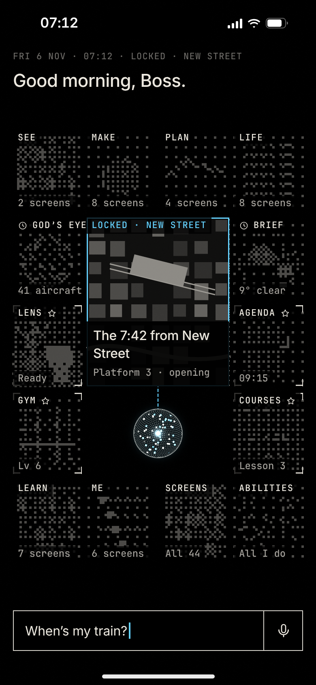

The orb is an eye: what it looks at is sharp, everything else is grain. Asked for his train, it lets go of the book, searches the wall, locks on New Street, and the attention takes the screen.

1 · He asks07:12. He types “When’s my train?”. The eye lets go of tonight’s book; the wall falls back to grain.

2 · SearchingThe reticle hops feed to feed (the Agenda, God’s eye, the Brief), 90 ms a hop, the line of sight following.

3 · LockedIt locks on New Street. That feed opens in the centre, sharp; the line of sight holds on the station.
4 · The StageThe attention takes the screen: the city in grain except the way he is going, the station boxed, the sentence after.